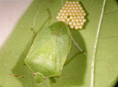

TUBER VEGETABLES :: MINOR PESTS :: GREEN STINK BUG
Green stink bug: Nezara viridula (Pentatomidae: Hemiptera):
Distribution and status
It is cosmopolitan in distribution and recorded from South Europe and Japan down to Australia and South Africa. It is a minor pest and does not need management exclusively.
Host range
It is a polyphagous pest and also breeds on coffee, citrus, cotton, millets, pulses, potato, rice, indigo, tomato, wheat etc.
Damage symptoms
Nymphs and adults suck cell sap from tender leaves, and shoots, thereby devitalize plants.
Bionomics
Adults are medium-sized bugs and green to reddish-brown in colour. A female lays up to 300 eggs, stuck together in rafts, on dorsal surface of leaves. Eggs are barrel-shaped, whitish in colour, turning pink with age. Freshly hatched nymphs remain clustered around egg-raft and it is only after first moult that nymphs disperse and start active feeding.
|  |